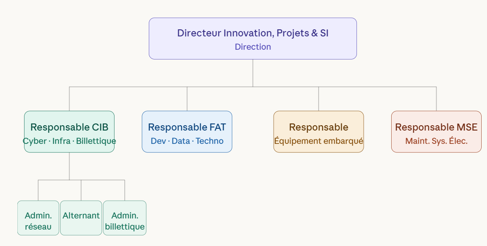

1. Introduction et Contexte
Entreprise : Keolis Besançon Mobilités — Réseau Ginko
Service : Infrastructure Réseau
- Gestion de l'infrastructure informatique, des serveurs virtuels (ESXi), du réseau multi-sites et de la téléphonie de l'entreprise.
- Environnement critique nécessitant une très haute disponibilité pour assurer la continuité du service des bus et tramways.

Réalisations professionnelles
Projet majeur : Automatisation des sauvegardes réseau
L'ancien système de sauvegarde des configurations switchs reposait sur le protocole TFTP, qui fait transiter les données en clair sur le réseau. L'objectif était de migrer vers une solution sécurisée, automatisée et conforme au Plan de Continuité d'Activité.
Déploiement du serveur Linux Debian
- Installation de Debian 13 sur un serveur dédié aux sauvegardes
- Configuration réseau : VLANs, adressage IP, règles pare-feu
- Application du principe de moindre privilège : utilisateur système dédié sans accès shell
- Création d'un environnement chroot pour isoler chaque type de sauvegarde
- Configuration du serveur SFTP avec
ForceCommand internal-sftpetChrootDirectory
Script Bash — Switchs Aruba
- Développement d'un script Bash orchestrant les requêtes SCP avec journalisation des erreurs
- Intégration de Keychain pour la persistance de l'agent SSH entre redémarrages
- Variable SSH_OPTS pour forcer les algorithmes et le mode
BatchMode=yes - Migration du script vers
/etc/pour une structure système robuste - Planification via Crontab (exécution toutes les 20h)
Switchs Moxa — MXview
- Contrainte matérielle : SSH non supporté sur les switchs industriels Moxa
- Mise en conformité du serveur Windows Server 2022 et utilisation de l'outil propriétaire MXview
- Planification des sauvegardes via MXview et résolution de l'erreur "authentication failed"
Sauvegardes vCenter (Push SFTP)
- Configuration du vCenter pour exporter automatiquement ses sauvegardes en mode Push SFTP
- Diagnostic via
journalctl -u ssh: résolution de l'échec d'authentification par mot de passe - Désactivation du tunneling, du forwarding agent et de X11 (durcissement maximal)
Obstacles rencontrés et adaptations
- Switchs Aruba : impossibilité d'utiliser les clés SSH en mode Push → adaptation vers un modèle Pull côté serveur
- Agent SSH temporaire (lié à la session) → utilisation de Keychain pour la persistance
- Switchs Moxa : SSH non supporté → recours à l'outil propriétaire MXview
- vCenter : authentification par mot de passe refusée → correction du bloc Match Group dans sshd_config
Résultats obtenus
- Sauvegardes automatiques opérationnelles sur les switchs Aruba, Moxa et vCenter
- Serveur Debian isolé et durci (chroot, nologin, pas de shell)
- Procédure documentée et démontrée à l'équipe

Missions annexes et gestion des incidents
Gestion de flotte mobile — SOTI MobiControl
- Déploiement de 3 profils MDM sur les smartphones agents de terrain (lutte anti-fraude, Magasin Tram)
- Enrôlement de 7 tablettes métiers via QR Code (méthode MDT au premier allumage)
- Résolution de dysfonctionnements applicatifs : paquets manquants, incompatibilités Samsung Galaxy A17
- Déploiement du mode Kiosque : restriction de la navigation aux applications autorisées
- Identification et correction d'une faille de contournement Chrome (sélection texte → Recherche Web → navigateur libre)
Cybersécurité physique — Audit réseau (ISO 27001)
- Audit réseau complet sur les sites Hauts de Chazal (dépôt tram) et Planoise (dépôt bus)
- Inventaire exhaustif des prises RJ45 : localisation, étiquetage, état
- Désactivation des ports inutilisés côté switch → réduction de la surface d'attaque interne
- Documentation multi-sites conforme aux référentiels ISO 27001 / ANSSI
Sécurisation des accès tiers — Wallix (Bastion PAM)
- Déploiement et paramétrage réseau de la solution Wallix Bastion
- Objectif : encadrer, restreindre et tracer les interventions des prestataires externes sur l'infrastructure
- Configuration des cibles (équipements à protéger) et des comptes d'accès dédiés
- Mise en place d'un tunnel sécurisé pour les connexions SSH et RDP des tiers
Diagnostic de routage VPN — Site de Planoise
- Symptôme : perte totale de la connexion Internet lors de l'activation du VPN
- Diagnostic : trafic Internet transitant par la passerelle entreprise au lieu de sortir localement
- Identification de l'anomalie : métriques d'interfaces Windows incorrectes
- Développement d'un script PowerShell de collecte des tables de routage pour faciliter les diagnostics futurs
Résultats obtenus
- Flotte mobile entièrement gérée, sécurisée et mode Kiosque opérationnel
- Ports réseau inutilisés désactivés sur 2 sites → surface d'attaque réduite
- Accès prestataires tracés et encadrés via Wallix Bastion
- Cause du dysfonctionnement VPN identifiée et script PowerShell livré
Développement professionnel et veille technologique
Environnement d'apprentissage personnel
- Centralisation de toute la documentation et des notes d'intervention sur OneNote
- Utilisation du serveur Debian comme bac à sable pour tester les commandes Bash de manière isolée avant mise en production
- Portfolio en ligne hébergé sur GitHub Pages : retrace l'ensemble du parcours de formation
Veille technologique quotidienne
- IT-Connect : plateforme orientée administration système Linux/Windows
- BonjourLaFuite : alertes cybersécurité et vulnérabilités (CVE)
- C'est cette veille qui a permis d'identifier rapidement la nature de la faille CVE-2025-4632 lors du projet MagicINFO (1er stage)
Intégration des nouveaux outils IA
- Utilisation de NotebookLM pour synthétiser des documentations techniques complexes
- Structuration de la démarche de résolution d'incidents grâce aux outils d'IA
- Veille active sur les évolutions de l'IA appliquée à l'administration système et à la cybersécurité
Bilan professionnel
- Parcours cohérent : Bac Pro Systèmes Numériques (mention Bien) → BTS SIO SISR
- Expériences variées : SDIS 25, CHU Besançon, Keolis Ginko (2 stages)
- Projet professionnel orienté cybersécurité et administration système réseau
Bilan du parcours
Scripting & Automatisation
Bash, PowerShell, Crontab, Keychain, SSH avancé, sshd_config
Sécurité réseau
Chroot, RBAC, Wallix PAM, audit ISO 27001, hardening, FortiGate VDOM
Mobilité & MDM
SOTI MobiControl, profils MDM, mode Kiosque, Android Enterprise
Gestion de projet
Planification, audit terrain, cartographie réseau, coordination prestataires
Ces deux stages chez Keolis Ginko m'ont permis de mobiliser l'ensemble des compétences du bloc sur des projets réels dans un environnement critique. Mon projet professionnel s'oriente vers la cybersécurité et l'administration système réseau.
Retour au portfolio